Loot in Medieval Overhaul settlements
Playing
How much loot to expect in the settlements CBF builds for Medieval Overhaul. The values are market value in silver, with quality and condition included. Weapons and apparel worn by pawns, furniture and buildings are not counted.
These are simulated values: each settlement type was laid out 8 times and its containers were filled 200 times. Settlements in your game are often a little larger than in the simulation, so expect somewhat more. The value per container is the more reliable figure. The numbers change when loot tables are updated.
See also: Loot for how loot tables and containers work.
Settlements
| Settlement |
Expected value |
Per container |
| Village |
23,131 |
167 |
| Fortress |
50,337 |
309 |
| Market town |
73,284 |
261 |
| Fortress city |
110,625 |
246 |
| Large market town |
124,635 |
265 |
Village
- Tech level: Medieval
- Expected loot value: 23,131 silver on average, usually 17,023 to 29,692
- Containers: about 138, worth 167 silver each on average
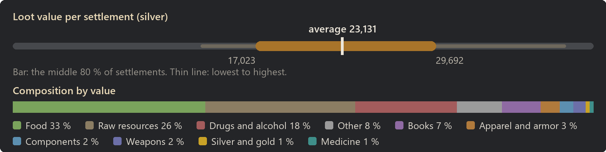
Food: 33 % of the value
| Item | Share of this class | Found in | Average amount |
|---|
| Bread | 12 % | almost always | 99 |
| Flour | 12 % | almost always | 594 |
| Wheat | 8 % | almost always | 589 |
| Potatoes | 7 % | almost always | 491 |
| Apples | 7 % | almost always | 488 |
| Straw | 6 % | almost always | 615 |
| Cabbages | 6 % | almost always | 387 |
| Carrots | 6 % | 98 % | 385 |
Raw resources: 26 % of the value
| Item | Share of this class | Found in | Average amount |
|---|
| Daer leather | 36 % | 85 % | 127 |
| Raw wood | 20 % | almost always | 1,501 |
| Wood | 12 % | almost always | 589 |
| Silk | 10 % | 88 % | 125 |
| Plainleather | 6 % | 88 % | 165 |
| Cloth | 3 % | 88 % | 134 |
| Linen | 3 % | 84 % | 114 |
| Gold ore | 2 % | 44 % | 46 |
Drugs and alcohol: 18 % of the value
| Item | Share of this class | Found in | Average amount |
|---|
| Wine | 24 % | 80 % | 48 |
| Mulberry wine | 15 % | 68 % | 30 |
| Griffon wine | 14 % | 63 % | 29 |
| Ale | 12 % | 82 % | 39 |
| Cider | 11 % | 76 % | 37 |
| Luhix | 7 % | 22 % | 1 |
| Stardust | 6 % | 24 % | 1 |
| Paregoric | 4 % | 18 % | 1 |
Other: 8 % of the value
| Item | Share of this class | Found in | Average amount |
|---|
| Dirty silver chalice | 19 % | 60 % | 2 |
| Dirty golden bowl | 10 % | 43 % | 1 |
| Dirty golden chalice | 10 % | 34 % | 1 |
| Dirty silver bowl | 9 % | 41 % | 1 |
| Treatise (animals) | 3 % | 3 % | 0 |
| Lindwurm broad scales | 3 % | 4 % | 0 |
| Treatise (construction) | 3 % | 3 % | 0 |
| Glowing resin | 3 % | 4 % | 0 |
Books: 7 % of the value
| Item | Share of this class | Found in | Average amount |
|---|
| Ancient warbow schematic | 9 % | 22 % | 0 |
| Ancient gunpowder schematic | 8 % | 19 % | 0 |
| Advanced cooking recipes | 7 % | 18 % | 0 |
| Ancient ballista repeater schematics | 7 % | 18 % | 0 |
| Ancient tar schematic | 6 % | 18 % | 0 |
| Ancient crossbow schematic | 6 % | 18 % | 0 |
| Ancient crossbow schematic | 6 % | 15 % | 0 |
| Ancient noble blades schematic | 6 % | 18 % | 0 |
Apparel and armor: 3 % of the value
| Item | Share of this class | Found in | Average amount |
|---|
| Ring of holding | 17 % | 6 % | 0 |
| Ring of tending | 16 % | 7 % | 0 |
| Ring of haste | 11 % | 5 % | 0 |
| Hauberk | 7 % | 22 % | 0 |
| Brigandine | 6 % | 18 % | 0 |
| Padded armor | 4 % | 16 % | 0 |
| Sallet (visored) | 3 % | 12 % | 0 |
| Heavy hauberk | 3 % | 10 % | 0 |
Components: 2 % of the value
| Item | Share of this class | Found in | Average amount |
|---|
| Basic component | 99 % | 78 % | 36 |
| Scorpio bolts | 1 % | almost always | 2 |
| Ballista bolts | 0 % | 12 % | 0 |
Weapons: 2 % of the value
| Item | Share of this class | Found in | Average amount |
|---|
| Arming sword | 9 % | 26 % | 0 |
| Hooked blade | 8 % | 34 % | 0 |
| Halberd | 7 % | 14 % | 0 |
| Named greatsword | 7 % | under 1 % | 0 |
| War bow | 7 % | 25 % | 0 |
| Woodcutter's axe | 4 % | 20 % | 0 |
| Greatbow | 4 % | 22 % | 0 |
| Recurve bow | 4 % | 26 % | 0 |
| Most valuable possible find |
Value |
Chance per settlement |
| Named greatsword |
6,810 |
under 1 % |
| Treatise (animals) |
1,200 |
3 % |
| Treatise (mining) |
1,200 |
2 % |
| Treatise (construction) |
1,200 |
3 % |
| Treatise (social) |
1,200 |
1 % |
Fortress
- Tech level: Medieval
- Expected loot value: 50,337 silver on average, usually 40,118 to 62,333
- Containers: about 163, worth 309 silver each on average
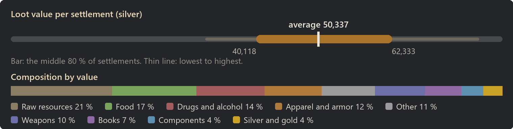
Raw resources: 21 % of the value
| Item | Share of this class | Found in | Average amount |
|---|
| Daer leather | 36 % | 98 % | 220 |
| Silk | 11 % | 96 % | 222 |
| Raw wood | 11 % | almost always | 1,371 |
| Wood | 8 % | almost always | 733 |
| Gold ore | 5 % | 86 % | 167 |
| Plainleather | 4 % | 96 % | 215 |
| Iron ingot | 4 % | 98 % | 240 |
| Linen | 3 % | 99 % | 219 |
Food: 17 % of the value
| Item | Share of this class | Found in | Average amount |
|---|
| Bread | 17 % | almost always | 166 |
| Dried Meat | 12 % | almost always | 543 |
| Flour | 10 % | almost always | 554 |
| Smoked meat | 10 % | almost always | 55 |
| Wheat | 7 % | almost always | 564 |
| Potatoes | 4 % | almost always | 333 |
| Apples | 4 % | almost always | 318 |
| Pumpkins | 4 % | 96 % | 291 |
Drugs and alcohol: 14 % of the value
| Item | Share of this class | Found in | Average amount |
|---|
| Griffon wine | 25 % | 98 % | 88 |
| Wine | 24 % | 98 % | 84 |
| Mulberry wine | 23 % | 96 % | 79 |
| Cider | 15 % | 96 % | 86 |
| Ale | 13 % | 96 % | 75 |
Apparel and armor: 12 % of the value
| Item | Share of this class | Found in | Average amount |
|---|
| Named full plate | 10 % | 13 % | 0 |
| Ring of tending | 9 % | 24 % | 1 |
| Ring of haste | 9 % | 24 % | 1 |
| Ring of holding | 8 % | 25 % | 1 |
| Named armet | 7 % | 12 % | 0 |
| Hauberk | 5 % | 75 % | 2 |
| Brigandine | 5 % | 69 % | 1 |
| Heavy hauberk | 4 % | 65 % | 1 |
Other: 11 % of the value
| Item | Share of this class | Found in | Average amount |
|---|
| Dirty silver chalice | 31 % | 99 % | 11 |
| Dirty silver bowl | 18 % | 96 % | 6 |
| Dirty golden chalice | 14 % | 84 % | 5 |
| Dirty golden bowl | 14 % | 94 % | 5 |
| Ruby dice | 5 % | 22 % | 1 |
| Sapphire dice | 4 % | 22 % | 1 |
| Emerald dice | 3 % | 21 % | 1 |
| Dirty ruby skull | 2 % | 24 % | 1 |
Weapons: 10 % of the value
| Item | Share of this class | Found in | Average amount |
|---|
| Named two-handed flanged mace | 13 % | 14 % | 0 |
| Named greataxe | 10 % | 8 % | 0 |
| Named halberd | 9 % | 9 % | 0 |
| Named greatsword | 9 % | 8 % | 0 |
| Named two-handed hammer | 8 % | 7 % | 0 |
| War bow | 4 % | 88 % | 3 |
| Greatsword | 4 % | 32 % | 0 |
| Greatbow | 3 % | 82 % | 3 |
Books: 7 % of the value
| Item | Share of this class | Found in | Average amount |
|---|
| Ancient miltary polearm schematic | 7 % | 42 % | 1 |
| Ancient military blades schematic | 7 % | 40 % | 1 |
| Ancient warbow schematic | 7 % | 40 % | 1 |
| Ancient noble blades schematic | 7 % | 42 % | 1 |
| Ancient crossbow schematic | 7 % | 41 % | 1 |
| Ancient noble polearm schematic | 7 % | 38 % | 0 |
| Advanced cooking recipes | 6 % | 44 % | 0 |
| Intermediate cooking recipes | 6 % | 40 % | 0 |
Components: 4 % of the value
| Item | Share of this class | Found in | Average amount |
|---|
| Basic component | 97 % | almost always | 145 |
| Stone boulder | 1 % | 88 % | 1 |
| Tarred stone boulder | 1 % | 88 % | 1 |
| Ballista bolts | 1 % | almost always | 4 |
Silver and gold: 4 % of the value
| Item | Share of this class | Found in | Average amount |
|---|
| Gold | 100 % | 96 % | 193 |
| Most valuable possible find |
Value |
Chance per settlement |
| Named greatsword |
6,810 |
8 % |
| Named two-handed hammer |
6,567 |
7 % |
| Named greataxe |
6,532 |
8 % |
| Named two-handed flanged mace |
6,067 |
14 % |
| Named halberd |
6,037 |
9 % |
Market town
- Tech level: Medieval
- Expected loot value: 73,284 silver on average, usually 66,347 to 80,874
- Containers: about 281, worth 261 silver each on average
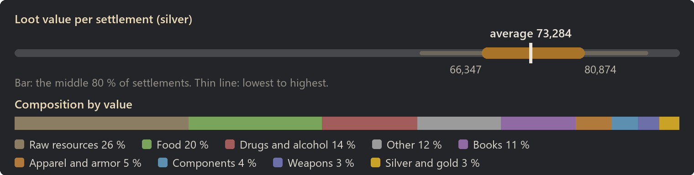
Raw resources: 26 % of the value
| Item | Share of this class | Found in | Average amount |
|---|
| Daer leather | 38 % | almost always | 426 |
| Raw wood | 12 % | almost always | 2,946 |
| Silk | 10 % | almost always | 398 |
| Wood | 9 % | almost always | 1,393 |
| Plainleather | 8 % | almost always | 750 |
| Cloth | 4 % | almost always | 489 |
| Linen | 3 % | almost always | 405 |
| Gold ore | 3 % | 94 % | 213 |
Food: 20 % of the value
| Item | Share of this class | Found in | Average amount |
|---|
| Bread | 16 % | almost always | 253 |
| Dried Meat | 10 % | almost always | 815 |
| Flour | 10 % | almost always | 970 |
| Wheat | 7 % | almost always | 979 |
| Smoked meat | 7 % | almost always | 71 |
| Apples | 5 % | almost always | 651 |
| Potatoes | 5 % | almost always | 636 |
| Cabbages | 4 % | almost always | 568 |
Drugs and alcohol: 14 % of the value
| Item | Share of this class | Found in | Average amount |
|---|
| Wine | 20 % | 98 % | 106 |
| Griffon wine | 18 % | 97 % | 96 |
| Mulberry wine | 17 % | 97 % | 88 |
| Cider | 12 % | 98 % | 103 |
| Ale | 11 % | 97 % | 95 |
| Stardust | 5 % | 42 % | 2 |
| Luhix | 5 % | 35 % | 1 |
| Roxberry stout | 5 % | 62 % | 19 |
Other: 12 % of the value
| Item | Share of this class | Found in | Average amount |
|---|
| Dirty silver chalice | 25 % | almost always | 15 |
| Dirty silver bowl | 13 % | 98 % | 8 |
| Dirty golden chalice | 12 % | 94 % | 7 |
| Dirty golden bowl | 10 % | 95 % | 6 |
| Sapphire dice | 4 % | 31 % | 1 |
| Ruby dice | 4 % | 28 % | 1 |
| Emerald dice | 2 % | 26 % | 1 |
| Lindwurm broad scales | 2 % | 12 % | 0 |
Books: 11 % of the value
| Item | Share of this class | Found in | Average amount |
|---|
| Ancient miltary polearm schematic | 7 % | 68 % | 1 |
| Ancient military blades schematic | 7 % | 68 % | 1 |
| Ancient crossbow schematic | 7 % | 70 % | 1 |
| Ancient metallurgy schematic | 7 % | 64 % | 1 |
| Ancient tar schematic | 6 % | 70 % | 1 |
| Ancient military maces schematic | 6 % | 62 % | 1 |
| Ancient noble polearm schematic | 6 % | 64 % | 1 |
| Ancient warbow schematic | 6 % | 64 % | 1 |
Apparel and armor: 5 % of the value
| Item | Share of this class | Found in | Average amount |
|---|
| Ring of holding | 15 % | 32 % | 1 |
| Ring of haste | 15 % | 28 % | 1 |
| Ring of tending | 14 % | 24 % | 1 |
| Hauberk | 6 % | 70 % | 1 |
| Brigandine | 6 % | 57 % | 1 |
| Heavy hauberk | 4 % | 56 % | 1 |
| Padded armor | 4 % | 56 % | 1 |
| Breast plate | 3 % | 38 % | 1 |
Components: 4 % of the value
| Item | Share of this class | Found in | Average amount |
|---|
| Basic component | 97 % | almost always | 183 |
| Stone boulder | 1 % | almost always | 2 |
| Tarred stone boulder | 1 % | almost always | 2 |
| Scorpio bolts | 0 % | almost always | 1 |
Weapons: 3 % of the value
| Item | Share of this class | Found in | Average amount |
|---|
| War bow | 8 % | 82 % | 2 |
| Greatbow | 8 % | 84 % | 2 |
| Halberd | 6 % | 50 % | 1 |
| Greatsword | 6 % | 24 % | 0 |
| Hunting bow | 5 % | 77 % | 2 |
| Arming sword | 5 % | 50 % | 1 |
| Recurve bow | 5 % | 84 % | 2 |
| Longsword | 4 % | 29 % | 0 |
Silver and gold: 3 % of the value
| Item | Share of this class | Found in | Average amount |
|---|
| Gold | 100 % | almost always | 219 |
| Most valuable possible find |
Value |
Chance per settlement |
| Named two-handed hammer |
6,567 |
under 1 % |
| Named halberd |
6,037 |
under 1 % |
| Treatise (animals) |
1,200 |
6 % |
| Treatise (shooting) |
1,200 |
6 % |
| Treatise (intellectual) |
1,200 |
4 % |
Fortress city
- Tech level: Medieval
- Expected loot value: 110,625 silver on average, usually 96,194 to 125,373
- Containers: about 449, worth 246 silver each on average
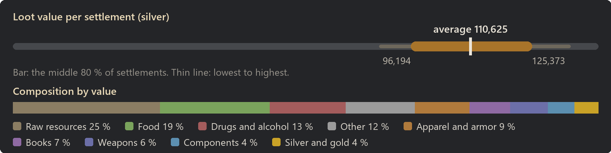
Raw resources: 25 % of the value
| Item | Share of this class | Found in | Average amount |
|---|
| Daer leather | 34 % | almost always | 563 |
| Raw wood | 12 % | almost always | 4,292 |
| Silk | 10 % | almost always | 574 |
| Wood | 10 % | almost always | 2,344 |
| Plainleather | 6 % | almost always | 809 |
| Gold ore | 4 % | almost always | 412 |
| Cloth | 4 % | almost always | 660 |
| Linen | 3 % | almost always | 560 |
Food: 19 % of the value
| Item | Share of this class | Found in | Average amount |
|---|
| Bread | 16 % | almost always | 380 |
| Flour | 10 % | almost always | 1,440 |
| Dried Meat | 10 % | almost always | 1,061 |
| Wheat | 8 % | almost always | 1,463 |
| Smoked meat | 7 % | almost always | 95 |
| Potatoes | 5 % | almost always | 1,021 |
| Apples | 5 % | almost always | 1,007 |
| Garlic | 4 % | almost always | 724 |
Drugs and alcohol: 13 % of the value
| Item | Share of this class | Found in | Average amount |
|---|
| Wine | 29 % | almost always | 209 |
| Mulberry wine | 20 % | almost always | 142 |
| Griffon wine | 19 % | almost always | 136 |
| Cider | 12 % | almost always | 145 |
| Ale | 12 % | 99 % | 140 |
| Roxberry stout | 5 % | 75 % | 27 |
| Luhix | 1 % | 14 % | 0 |
| Stardust | 1 % | 14 % | 0 |
Other: 12 % of the value
| Item | Share of this class | Found in | Average amount |
|---|
| Dirty silver chalice | 29 % | almost always | 25 |
| Dirty silver bowl | 15 % | almost always | 13 |
| Dirty golden chalice | 13 % | 98 % | 11 |
| Dirty golden bowl | 11 % | almost always | 10 |
| Sapphire dice | 4 % | 38 % | 1 |
| Ruby dice | 4 % | 36 % | 1 |
| Emerald dice | 3 % | 43 % | 2 |
| Dirty ruby skull | 2 % | 43 % | 2 |
Apparel and armor: 9 % of the value
| Item | Share of this class | Found in | Average amount |
|---|
| Ring of tending | 10 % | 38 % | 1 |
| Ring of haste | 8 % | 41 % | 2 |
| Ring of holding | 8 % | 44 % | 1 |
| Hauberk | 6 % | 95 % | 3 |
| Named full plate | 6 % | 14 % | 0 |
| Brigandine | 6 % | 92 % | 2 |
| Heavy hauberk | 5 % | 86 % | 2 |
| Breast plate | 4 % | 80 % | 2 |
Books: 7 % of the value
| Item | Share of this class | Found in | Average amount |
|---|
| Ancient crossbow schematic | 7 % | 64 % | 1 |
| Ancient military blades schematic | 7 % | 60 % | 1 |
| Ancient noble blades schematic | 7 % | 63 % | 1 |
| Ancient noble maces schematic | 7 % | 60 % | 1 |
| Ancient warbow schematic | 7 % | 60 % | 1 |
| Ancient metallurgy schematic | 6 % | 59 % | 1 |
| Ancient gunpowder schematic | 6 % | 59 % | 1 |
| Ancient miltary polearm schematic | 6 % | 60 % | 1 |
Weapons: 6 % of the value
| Item | Share of this class | Found in | Average amount |
|---|
| Named halberd | 9 % | 13 % | 0 |
| Named greatsword | 8 % | 9 % | 0 |
| Named greataxe | 7 % | 8 % | 0 |
| War bow | 6 % | 98 % | 5 |
| Named two-handed flanged mace | 5 % | 6 % | 0 |
| Greatbow | 5 % | 97 % | 5 |
| Greatsword | 4 % | 51 % | 1 |
| Halberd | 4 % | 75 % | 1 |
Components: 4 % of the value
| Item | Share of this class | Found in | Average amount |
|---|
| Basic component | 97 % | almost always | 324 |
| Stone boulder | 1 % | almost always | 3 |
| Tarred stone boulder | 1 % | almost always | 3 |
| Ballista bolts | 0 % | almost always | 2 |
Silver and gold: 4 % of the value
| Item | Share of this class | Found in | Average amount |
|---|
| Gold | 100 % | almost always | 445 |
| Most valuable possible find |
Value |
Chance per settlement |
| Named greatsword |
6,810 |
9 % |
| Named two-handed hammer |
6,567 |
4 % |
| Named greataxe |
6,532 |
8 % |
| Named two-handed flanged mace |
6,067 |
6 % |
| Named halberd |
6,037 |
14 % |
Large market town
- Tech level: Medieval
- Expected loot value: 124,635 silver on average, usually 110,708 to 141,891
- Containers: about 471, worth 265 silver each on average
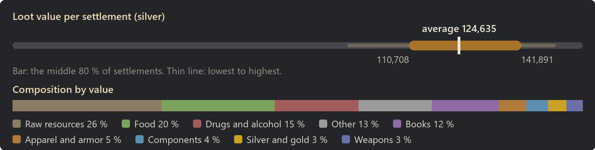
Raw resources: 26 % of the value
| Item | Share of this class | Found in | Average amount |
|---|
| Daer leather | 38 % | almost always | 735 |
| Raw wood | 12 % | almost always | 4,774 |
| Silk | 10 % | almost always | 662 |
| Plainleather | 9 % | almost always | 1,354 |
| Wood | 8 % | almost always | 2,210 |
| Cloth | 4 % | almost always | 851 |
| Gold ore | 4 % | 98 % | 376 |
| Linen | 3 % | almost always | 679 |
Food: 20 % of the value
| Item | Share of this class | Found in | Average amount |
|---|
| Bread | 16 % | almost always | 433 |
| Dried Meat | 12 % | almost always | 1,503 |
| Flour | 10 % | almost always | 1,626 |
| Smoked meat | 8 % | almost always | 133 |
| Wheat | 7 % | almost always | 1,659 |
| Apples | 5 % | almost always | 1,109 |
| Potatoes | 5 % | almost always | 1,102 |
| Carrots | 4 % | almost always | 889 |
Drugs and alcohol: 15 % of the value
| Item | Share of this class | Found in | Average amount |
|---|
| Wine | 24 % | almost always | 223 |
| Mulberry wine | 19 % | almost always | 171 |
| Griffon wine | 18 % | almost always | 167 |
| Ale | 12 % | almost always | 175 |
| Cider | 11 % | almost always | 163 |
| Stardust | 4 % | 58 % | 3 |
| Luhix | 4 % | 50 % | 2 |
| Paregoric | 3 % | 59 % | 2 |
Other: 13 % of the value
| Item | Share of this class | Found in | Average amount |
|---|
| Dirty silver chalice | 26 % | almost always | 27 |
| Dirty silver bowl | 12 % | almost always | 13 |
| Dirty golden chalice | 10 % | 96 % | 11 |
| Dirty golden bowl | 10 % | almost always | 11 |
| Sapphire dice | 3 % | 36 % | 2 |
| Ruby dice | 3 % | 36 % | 1 |
| Treatise (plants) | 2 % | 14 % | 0 |
| Emerald dice | 2 % | 36 % | 1 |
Books: 12 % of the value
| Item | Share of this class | Found in | Average amount |
|---|
| Ancient noble blades schematic | 7 % | 85 % | 2 |
| Ancient greatbow schematic | 7 % | 90 % | 2 |
| Ancient ballista repeater schematics | 7 % | 83 % | 2 |
| Ancient noble polearm schematic | 7 % | 86 % | 2 |
| Ancient metallurgy schematic | 6 % | 82 % | 2 |
| Ancient noble maces schematic | 6 % | 83 % | 2 |
| Ancient military blades schematic | 6 % | 83 % | 2 |
| Intermediate cooking recipes | 6 % | 84 % | 2 |
Apparel and armor: 5 % of the value
| Item | Share of this class | Found in | Average amount |
|---|
| Ring of tending | 22 % | 44 % | 2 |
| Ring of holding | 17 % | 48 % | 2 |
| Ring of haste | 10 % | 30 % | 1 |
| Hauberk | 6 % | 80 % | 2 |
| Brigandine | 5 % | 62 % | 1 |
| Heavy hauberk | 4 % | 59 % | 1 |
| Breast plate | 4 % | 50 % | 1 |
| Padded armor | 3 % | 64 % | 1 |
Components: 4 % of the value
| Item | Share of this class | Found in | Average amount |
|---|
| Basic component | 98 % | almost always | 313 |
| Stone boulder | 1 % | 88 % | 2 |
| Tarred stone boulder | 1 % | 88 % | 2 |
| Scorpio bolts | 0 % | almost always | 1 |
| Ballista bolts | 0 % | 12 % | 0 |
Silver and gold: 3 % of the value
| Item | Share of this class | Found in | Average amount |
|---|
| Gold | 100 % | almost always | 402 |
Weapons: 3 % of the value
| Item | Share of this class | Found in | Average amount |
|---|
| War bow | 7 % | 88 % | 3 |
| Greatbow | 6 % | 90 % | 3 |
| Greatsword | 5 % | 37 % | 0 |
| Hunting bow | 5 % | 86 % | 3 |
| Hooked blade | 4 % | 84 % | 2 |
| Halberd | 4 % | 58 % | 1 |
| Arming sword | 4 % | 70 % | 1 |
| Longsword | 4 % | 32 % | 0 |
| Most valuable possible find |
Value |
Chance per settlement |
| Named greatsword |
6,810 |
1 % |
| Named two-handed hammer |
6,567 |
2 % |
| Named greataxe |
6,532 |
1 % |
| Named two-handed flanged mace |
6,067 |
under 1 % |
| Named halberd |
6,037 |
2 % |
Camps
| Camp |
Expected value |
Per container |
| Outpost |
371 |
87 |
| Hunting site |
6,806 |
238 |
| Stone mine |
7,308 |
222 |
| Coal mine |
7,543 |
229 |
| Logging site |
8,124 |
241 |
| Iron mine |
8,183 |
210 |
| Farming site |
8,302 |
246 |
| Bandit camp |
8,457 |
211 |
| Tribal camp |
13,957 |
222 |
Outpost
- Tech level: Medieval
- Expected loot value: 371 silver on average, usually 116 to 901
- Containers: about 4, worth 87 silver each on average
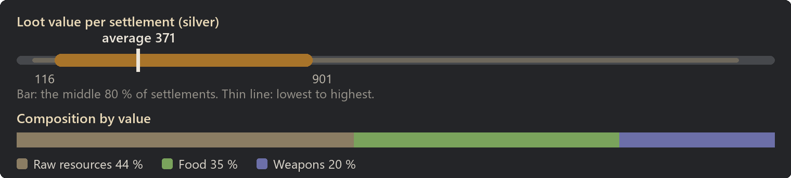
Raw resources: 44 % of the value
| Item | Share of this class | Found in | Average amount |
|---|
| Daer leather | 40 % | 8 % | 4 |
| Wood | 21 % | 26 % | 29 |
| Raw wood | 13 % | 24 % | 27 |
| Silk | 9 % | 4 % | 3 |
| Plainleather | 5 % | 8 % | 4 |
| Linen | 5 % | 8 % | 5 |
| Cloth | 4 % | 7 % | 4 |
| Slate blocks | 1 % | 1 % | 2 |
Food: 35 % of the value
| Item | Share of this class | Found in | Average amount |
|---|
| Bread | 24 % | 54 % | 4 |
| Straw | 16 % | 50 % | 30 |
| Garlic | 12 % | 12 % | 14 |
| Cabbages | 10 % | 11 % | 12 |
| Carrots | 9 % | 10 % | 11 |
| Lentils | 8 % | 10 % | 10 |
| Pumpkins | 8 % | 9 % | 9 |
| Onions | 5 % | 6 % | 6 |
Weapons: 20 % of the value
| Item | Share of this class | Found in | Average amount |
|---|
| Noble sword | 25 % | 3 % | 0 |
| Fencing sword | 14 % | 2 % | 0 |
| Longsword | 13 % | 2 % | 0 |
| Spetum | 9 % | 2 % | 0 |
| Falchion | 7 % | 2 % | 0 |
| Greatsword | 7 % | under 1 % | 0 |
| Halberd | 7 % | under 1 % | 0 |
| Bardiche | 6 % | under 1 % | 0 |
| Most valuable possible find |
Value |
Chance per settlement |
| Greatsword |
371 |
under 1 % |
| Bardiche |
294 |
under 1 % |
| Longsword |
255 |
2 % |
| Halberd |
248 |
under 1 % |
| Noble sword |
232 |
3 % |
Hunting site
- Tech level: Medieval
- Expected loot value: 6,806 silver on average, usually 4,287 to 9,474
- Containers: about 29, worth 238 silver each on average
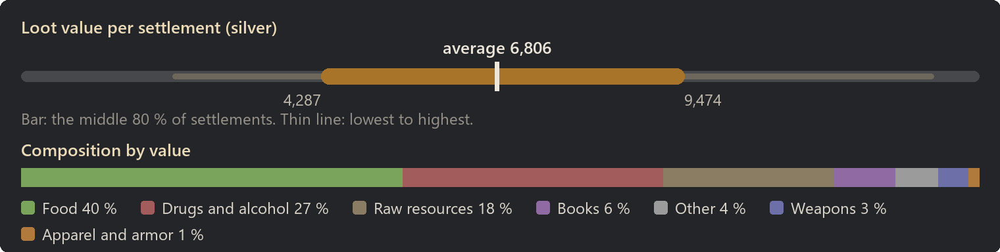
Food: 40 % of the value
| Item | Share of this class | Found in | Average amount |
|---|
| Dried Meat | 15 % | 98 % | 212 |
| Bread | 14 % | almost always | 43 |
| Smoked meat | 10 % | 94 % | 19 |
| Flour | 8 % | 97 % | 151 |
| Potatoes | 6 % | almost always | 157 |
| Apples | 6 % | 99 % | 148 |
| Wheat | 6 % | 98 % | 141 |
| Cabbages | 4 % | 62 % | 98 |
Drugs and alcohol: 27 % of the value
| Item | Share of this class | Found in | Average amount |
|---|
| Wine | 26 % | 57 % | 23 |
| Griffon wine | 24 % | 61 % | 22 |
| Mulberry wine | 20 % | 56 % | 20 |
| Cider | 15 % | 61 % | 23 |
| Ale | 14 % | 58 % | 22 |
Raw resources: 18 % of the value
| Item | Share of this class | Found in | Average amount |
|---|
| Daer leather | 46 % | 44 % | 33 |
| Silk | 15 % | 43 % | 36 |
| Plainleather | 13 % | 76 % | 73 |
| Cloth | 8 % | 72 % | 69 |
| Wood | 7 % | 50 % | 71 |
| Raw wood | 6 % | 68 % | 89 |
| Linen | 5 % | 46 % | 38 |
| Emerald | 0 % | 6 % | 0 |
Books: 6 % of the value
| Item | Share of this class | Found in | Average amount |
|---|
| Ancient greatbow schematic | 9 % | 8 % | 0 |
| Ancient miltary polearm schematic | 8 % | 6 % | 0 |
| Ancient ballista repeater schematics | 8 % | 6 % | 0 |
| Ancient noble blades schematic | 8 % | 6 % | 0 |
| Ancient metallurgy schematic | 7 % | 6 % | 0 |
| Ancient crossbow schematic | 7 % | 6 % | 0 |
| Ancient warbow schematic | 7 % | 6 % | 0 |
| Ancient tar schematic | 7 % | 6 % | 0 |
Other: 4 % of the value
| Item | Share of this class | Found in | Average amount |
|---|
| Dirty silver chalice | 35 % | 24 % | 1 |
| Dirty golden bowl | 28 % | 26 % | 1 |
| Dirty silver bowl | 27 % | 22 % | 1 |
| Dirty golden chalice | 9 % | 4 % | 0 |
| Ruined book | 1 % | 4 % | 0 |
Weapons: 3 % of the value
| Item | Share of this class | Found in | Average amount |
|---|
| Greatbow | 10 % | 18 % | 0 |
| Halberd | 7 % | 7 % | 0 |
| Longsword | 7 % | 4 % | 0 |
| Hunting bow | 6 % | 14 % | 0 |
| Recurve bow | 5 % | 18 % | 0 |
| Hooked blade | 5 % | 11 % | 0 |
| War bow | 5 % | 8 % | 0 |
| Longaxe | 4 % | 4 % | 0 |
Apparel and armor: 1 % of the value
| Item | Share of this class | Found in | Average amount |
|---|
| Brigandine | 16 % | 4 % | 0 |
| Hauberk | 15 % | 4 % | 0 |
| Sallet (visored) | 9 % | 4 % | 0 |
| Hounskull helmet | 7 % | 3 % | 0 |
| Chain nasal helm | 7 % | 4 % | 0 |
| Light lamellar | 6 % | 3 % | 0 |
| Padded surcoat | 6 % | 4 % | 0 |
| Heavy hauberk | 6 % | 2 % | 0 |
| Most valuable possible find |
Value |
Chance per settlement |
| Ancient warbow schematic |
500 |
6 % |
| Ancient noble maces schematic |
500 |
4 % |
| Ancient crossbow schematic |
500 |
10 % |
| Bardiche |
294 |
2 % |
| Longsword |
255 |
4 % |
Stone mine
- Tech level: Medieval
- Expected loot value: 7,308 silver on average, usually 4,772 to 10,040
- Containers: about 33, worth 222 silver each on average
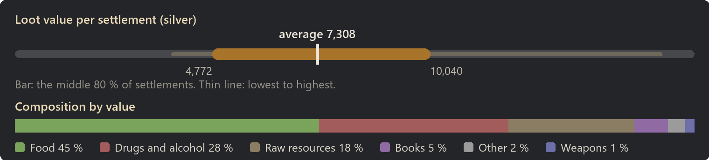
Food: 45 % of the value
| Item | Share of this class | Found in | Average amount |
|---|
| Bread | 14 % | almost always | 53 |
| Dried Meat | 13 % | 99 % | 231 |
| Smoked meat | 10 % | 98 % | 21 |
| Flour | 8 % | almost always | 177 |
| Potatoes | 6 % | almost always | 182 |
| Apples | 6 % | almost always | 181 |
| Wheat | 6 % | 98 % | 169 |
| Garlic | 5 % | 74 % | 138 |
Drugs and alcohol: 28 % of the value
| Item | Share of this class | Found in | Average amount |
|---|
| Wine | 24 % | 57 % | 24 |
| Mulberry wine | 24 % | 65 % | 25 |
| Griffon wine | 22 % | 62 % | 23 |
| Ale | 16 % | 73 % | 27 |
| Cider | 14 % | 58 % | 23 |
Raw resources: 18 % of the value
| Item | Share of this class | Found in | Average amount |
|---|
| Daer leather | 42 % | 43 % | 34 |
| Silk | 14 % | 48 % | 39 |
| Wood | 10 % | 66 % | 111 |
| Plainleather | 10 % | 64 % | 61 |
| Raw wood | 8 % | 73 % | 130 |
| Cloth | 5 % | 57 % | 47 |
| Linen | 4 % | 45 % | 36 |
| Gold ore | 2 % | 10 % | 10 |
Books: 5 % of the value
| Item | Share of this class | Found in | Average amount |
|---|
| Ancient tar schematic | 10 % | 6 % | 0 |
| Advanced cooking recipes | 9 % | 6 % | 0 |
| Ancient miltary polearm schematic | 8 % | 6 % | 0 |
| Ancient ballista repeater schematics | 8 % | 6 % | 0 |
| Ancient gunpowder schematic | 8 % | 6 % | 0 |
| Ancient military maces schematic | 8 % | 6 % | 0 |
| Ancient metallurgy schematic | 7 % | 6 % | 0 |
| Ancient crossbow schematic | 6 % | 4 % | 0 |
Other: 2 % of the value
| Item | Share of this class | Found in | Average amount |
|---|
| Dirty golden bowl | 37 % | 20 % | 0 |
| Dirty silver chalice | 35 % | 20 % | 0 |
| Dirty silver bowl | 23 % | 14 % | 0 |
| Dirty golden chalice | 4 % | 2 % | 0 |
| Ruined book | 1 % | 4 % | 0 |
Weapons: 1 % of the value
| Item | Share of this class | Found in | Average amount |
|---|
| Longsword | 10 % | 2 % | 0 |
| Boar spear | 7 % | 4 % | 0 |
| Hooked blade | 6 % | 6 % | 0 |
| Halberd | 6 % | 4 % | 0 |
| Arming sword | 6 % | 5 % | 0 |
| Pike | 5 % | 2 % | 0 |
| Greatbow | 5 % | 4 % | 0 |
| War bow | 5 % | 6 % | 0 |
| Most valuable possible find |
Value |
Chance per settlement |
| Ancient metallurgy schematic |
500 |
6 % |
| Ancient miltary polearm schematic |
500 |
6 % |
| Ancient noble polearm schematic |
500 |
4 % |
| Advanced cooking recipes |
500 |
6 % |
| Ancient noble blades schematic |
500 |
4 % |
Coal mine
- Tech level: Medieval
- Expected loot value: 7,543 silver on average, usually 5,359 to 9,885
- Containers: about 33, worth 229 silver each on average
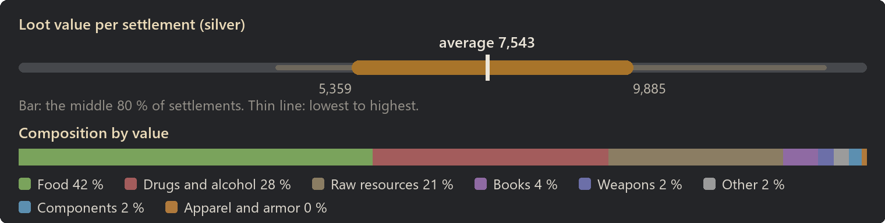
Food: 42 % of the value
| Item | Share of this class | Found in | Average amount |
|---|
| Bread | 15 % | almost always | 52 |
| Dried Meat | 13 % | 97 % | 211 |
| Smoked meat | 11 % | 98 % | 23 |
| Flour | 8 % | 99 % | 167 |
| Wheat | 6 % | 98 % | 171 |
| Potatoes | 6 % | 99 % | 161 |
| Apples | 5 % | 99 % | 155 |
| Pumpkins | 5 % | 73 % | 131 |
Drugs and alcohol: 28 % of the value
| Item | Share of this class | Found in | Average amount |
|---|
| Wine | 25 % | 68 % | 26 |
| Griffon wine | 24 % | 66 % | 25 |
| Mulberry wine | 22 % | 61 % | 23 |
| Cider | 16 % | 69 % | 28 |
| Ale | 13 % | 60 % | 23 |
Raw resources: 21 % of the value
| Item | Share of this class | Found in | Average amount |
|---|
| Daer leather | 42 % | 45 % | 38 |
| Raw wood | 11 % | almost always | 210 |
| Wood | 10 % | 80 % | 132 |
| Silk | 9 % | 38 % | 27 |
| Plainleather | 7 % | 59 % | 53 |
| Linen | 4 % | 48 % | 39 |
| Cloth | 4 % | 46 % | 39 |
| Coal chunks | 3 % | 55 % | 47 |
Books: 4 % of the value
| Item | Share of this class | Found in | Average amount |
|---|
| Ancient ballista repeater schematics | 10 % | 6 % | 0 |
| Ancient crossbow schematic | 9 % | 6 % | 0 |
| Ancient noble polearm schematic | 8 % | 4 % | 0 |
| Ancient tar schematic | 8 % | 4 % | 0 |
| Ancient greatbow schematic | 8 % | 4 % | 0 |
| Ancient metallurgy schematic | 7 % | 4 % | 0 |
| Ancient noble blades schematic | 7 % | 4 % | 0 |
| Ancient crossbow schematic | 6 % | 4 % | 0 |
Weapons: 2 % of the value
| Item | Share of this class | Found in | Average amount |
|---|
| Greatsword | 10 % | 2 % | 0 |
| Noble sword | 7 % | 4 % | 0 |
| Greatbow | 7 % | 10 % | 0 |
| Halberd | 7 % | 2 % | 0 |
| Hooked blade | 7 % | 8 % | 0 |
| Spetum | 6 % | 3 % | 0 |
| Fencing sword | 6 % | 2 % | 0 |
| War bow | 5 % | 8 % | 0 |
Other: 2 % of the value
| Item | Share of this class | Found in | Average amount |
|---|
| Dirty golden bowl | 36 % | 16 % | 0 |
| Dirty silver bowl | 32 % | 16 % | 0 |
| Dirty silver chalice | 28 % | 13 % | 0 |
| Dirty golden chalice | 4 % | 1 % | 0 |
| Ruined book | 1 % | 2 % | 0 |
Components: 2 % of the value
| Item | Share of this class | Found in | Average amount |
|---|
| Basic component | 100 % | 28 % | 8 |
| Most valuable possible find |
Value |
Chance per settlement |
| Ancient tar schematic |
500 |
4 % |
| Ancient noble maces schematic |
500 |
3 % |
| Ancient miltary polearm schematic |
500 |
2 % |
| Ancient ballista repeater schematics |
500 |
6 % |
| Greatsword |
371 |
2 % |
Logging site
- Tech level: Medieval
- Expected loot value: 8,124 silver on average, usually 5,993 to 10,073
- Containers: about 34, worth 241 silver each on average
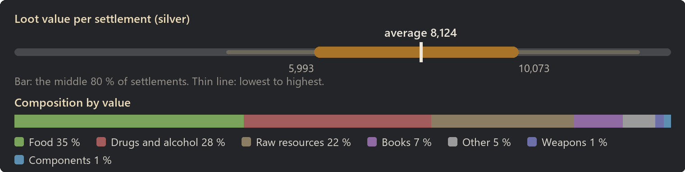
Food: 35 % of the value
| Item | Share of this class | Found in | Average amount |
|---|
| Bread | 15 % | almost always | 47 |
| Dried Meat | 15 % | 96 % | 219 |
| Smoked meat | 11 % | 97 % | 21 |
| Flour | 9 % | 98 % | 162 |
| Wheat | 6 % | 99 % | 167 |
| Apples | 6 % | 98 % | 147 |
| Potatoes | 6 % | 99 % | 141 |
| Carrots | 4 % | 66 % | 103 |
Drugs and alcohol: 28 % of the value
| Item | Share of this class | Found in | Average amount |
|---|
| Griffon wine | 25 % | 74 % | 30 |
| Mulberry wine | 23 % | 68 % | 27 |
| Wine | 23 % | 65 % | 26 |
| Cider | 16 % | 71 % | 30 |
| Ale | 13 % | 66 % | 26 |
Raw resources: 22 % of the value
| Item | Share of this class | Found in | Average amount |
|---|
| Daer leather | 38 % | 50 % | 40 |
| Raw wood | 21 % | almost always | 455 |
| Silk | 11 % | 46 % | 38 |
| Plainleather | 7 % | 65 % | 60 |
| Wood | 6 % | 66 % | 93 |
| Cloth | 5 % | 61 % | 55 |
| Linen | 4 % | 54 % | 40 |
| Silver ore | 2 % | 41 % | 27 |
Books: 7 % of the value
| Item | Share of this class | Found in | Average amount |
|---|
| Ancient noble polearm schematic | 8 % | 9 % | 0 |
| Ancient crossbow schematic | 8 % | 9 % | 0 |
| Ancient warbow schematic | 7 % | 9 % | 0 |
| Ancient military maces schematic | 7 % | 9 % | 0 |
| Ancient noble maces schematic | 7 % | 8 % | 0 |
| Ancient miltary polearm schematic | 7 % | 8 % | 0 |
| Ancient military blades schematic | 7 % | 8 % | 0 |
| Ancient gunpowder schematic | 7 % | 8 % | 0 |
Other: 5 % of the value
| Item | Share of this class | Found in | Average amount |
|---|
| Dirty silver chalice | 38 % | 37 % | 1 |
| Dirty silver bowl | 31 % | 34 % | 1 |
| Dirty golden bowl | 22 % | 27 % | 1 |
| Dirty golden chalice | 8 % | 7 % | 0 |
| Ruined book | 1 % | 8 % | 0 |
Weapons: 1 % of the value
| Item | Share of this class | Found in | Average amount |
|---|
| Arming sword | 10 % | 4 % | 0 |
| Noble sword | 9 % | 2 % | 0 |
| Hooked blade | 8 % | 8 % | 0 |
| War bow | 6 % | 6 % | 0 |
| Billhook | 6 % | 4 % | 0 |
| Fighting spear | 6 % | 3 % | 0 |
| Greatbow | 5 % | 6 % | 0 |
| Fencing sword | 4 % | 2 % | 0 |
Components: 1 % of the value
| Item | Share of this class | Found in | Average amount |
|---|
| Basic component | 100 % | 24 % | 6 |
| Most valuable possible find |
Value |
Chance per settlement |
| Ancient tar schematic |
500 |
6 % |
| Ancient greatbow schematic |
500 |
8 % |
| Ancient military maces schematic |
500 |
9 % |
| Ancient crossbow schematic |
500 |
8 % |
| Longsword |
255 |
under 1 % |
Iron mine
- Tech level: Medieval
- Expected loot value: 8,183 silver on average, usually 5,747 to 10,881
- Containers: about 39, worth 210 silver each on average
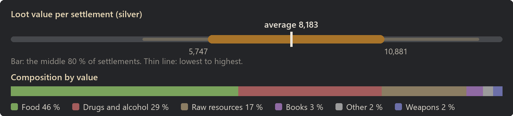
Food: 46 % of the value
| Item | Share of this class | Found in | Average amount |
|---|
| Bread | 14 % | almost always | 60 |
| Dried Meat | 14 % | 99 % | 268 |
| Smoked meat | 11 % | 98 % | 28 |
| Flour | 8 % | 99 % | 195 |
| Wheat | 6 % | 98 % | 201 |
| Apples | 6 % | 99 % | 199 |
| Potatoes | 6 % | almost always | 191 |
| Pumpkins | 5 % | 79 % | 159 |
Drugs and alcohol: 29 % of the value
| Item | Share of this class | Found in | Average amount |
|---|
| Griffon wine | 24 % | 70 % | 29 |
| Wine | 23 % | 68 % | 28 |
| Mulberry wine | 23 % | 68 % | 28 |
| Ale | 15 % | 72 % | 29 |
| Cider | 14 % | 70 % | 28 |
Raw resources: 17 % of the value
| Item | Share of this class | Found in | Average amount |
|---|
| Daer leather | 36 % | 37 % | 30 |
| Silk | 11 % | 42 % | 32 |
| Wood | 10 % | 68 % | 122 |
| Gold ore | 8 % | 34 % | 36 |
| Raw wood | 7 % | 76 % | 117 |
| Plainleather | 6 % | 51 % | 44 |
| Cloth | 5 % | 50 % | 43 |
| Iron ore | 4 % | 88 % | 157 |
Books: 3 % of the value
| Item | Share of this class | Found in | Average amount |
|---|
| Ancient crossbow schematic | 10 % | 6 % | 0 |
| Ancient metallurgy schematic | 10 % | 6 % | 0 |
| Advanced cooking recipes | 9 % | 5 % | 0 |
| Ancient ballista repeater schematics | 8 % | 4 % | 0 |
| Ancient crossbow schematic | 8 % | 4 % | 0 |
| Ancient miltary polearm schematic | 7 % | 4 % | 0 |
| Ancient warbow schematic | 6 % | 4 % | 0 |
| Ancient military maces schematic | 6 % | 3 % | 0 |
Other: 2 % of the value
| Item | Share of this class | Found in | Average amount |
|---|
| Dirty silver bowl | 37 % | 18 % | 0 |
| Dirty golden bowl | 34 % | 18 % | 0 |
| Dirty silver chalice | 27 % | 14 % | 0 |
| Dirty golden chalice | 2 % | under 1 % | 0 |
| Ruined book | 1 % | 2 % | 0 |
Weapons: 2 % of the value
| Item | Share of this class | Found in | Average amount |
|---|
| Longsword | 13 % | 3 % | 0 |
| Greatsword | 10 % | 4 % | 0 |
| Arming sword | 9 % | 5 % | 0 |
| Woodcutter's axe | 7 % | 8 % | 0 |
| Spetum | 7 % | 4 % | 0 |
| Noble sword | 5 % | 2 % | 0 |
| Pike | 4 % | 4 % | 0 |
| Hooked blade | 4 % | 6 % | 0 |
| Most valuable possible find |
Value |
Chance per settlement |
| Ancient noble polearm schematic |
500 |
2 % |
| Advanced cooking recipes |
500 |
5 % |
| Ancient crossbow schematic |
500 |
6 % |
| Ancient warbow schematic |
500 |
4 % |
| Ancient gunpowder schematic |
500 |
3 % |
Farming site
- Tech level: Medieval
- Expected loot value: 8,302 silver on average, usually 5,353 to 11,314
- Containers: about 34, worth 246 silver each on average
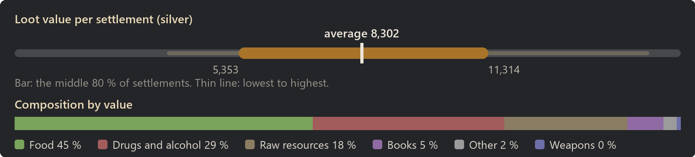
Food: 45 % of the value
| Item | Share of this class | Found in | Average amount |
|---|
| Bread | 15 % | almost always | 63 |
| Dried Meat | 14 % | 98 % | 277 |
| Smoked meat | 10 % | 99 % | 25 |
| Flour | 7 % | 98 % | 180 |
| Potatoes | 6 % | almost always | 189 |
| Apples | 5 % | 99 % | 184 |
| Wheat | 5 % | 97 % | 177 |
| Lentils | 4 % | 80 % | 152 |
Drugs and alcohol: 29 % of the value
| Item | Share of this class | Found in | Average amount |
|---|
| Mulberry wine | 25 % | 68 % | 30 |
| Griffon wine | 24 % | 71 % | 29 |
| Wine | 23 % | 65 % | 27 |
| Cider | 15 % | 68 % | 29 |
| Ale | 14 % | 63 % | 27 |
Raw resources: 18 % of the value
| Item | Share of this class | Found in | Average amount |
|---|
| Daer leather | 47 % | 48 % | 42 |
| Silk | 16 % | 56 % | 49 |
| Wood | 11 % | 70 % | 140 |
| Plainleather | 8 % | 66 % | 62 |
| Raw wood | 7 % | 76 % | 139 |
| Cloth | 5 % | 62 % | 55 |
| Linen | 5 % | 54 % | 45 |
| Granite blocks | 0 % | 2 % | 2 |
Books: 5 % of the value
| Item | Share of this class | Found in | Average amount |
|---|
| Ancient miltary polearm schematic | 9 % | 7 % | 0 |
| Ancient noble blades schematic | 8 % | 8 % | 0 |
| Ancient metallurgy schematic | 8 % | 7 % | 0 |
| Ancient military maces schematic | 8 % | 8 % | 0 |
| Intermediate cooking recipes | 7 % | 6 % | 0 |
| Ancient gunpowder schematic | 6 % | 6 % | 0 |
| Ancient crossbow schematic | 6 % | 5 % | 0 |
| Ancient noble maces schematic | 6 % | 4 % | 0 |
Other: 2 % of the value
| Item | Share of this class | Found in | Average amount |
|---|
| Dirty silver chalice | 39 % | 20 % | 0 |
| Dirty silver bowl | 31 % | 16 % | 0 |
| Dirty golden bowl | 30 % | 17 % | 0 |
| Ruined book | 1 % | 3 % | 0 |
| Most valuable possible find |
Value |
Chance per settlement |
| Ancient noble polearm schematic |
500 |
4 % |
| Ancient military maces schematic |
500 |
8 % |
| Ancient gunpowder schematic |
500 |
6 % |
| Ancient military blades schematic |
500 |
4 % |
| Ancient ballista repeater schematics |
500 |
5 % |
Bandit camp
- Tech level: Medieval
- Expected loot value: 8,457 silver on average, usually 6,852 to 10,149
- Containers: about 40, worth 211 silver each on average
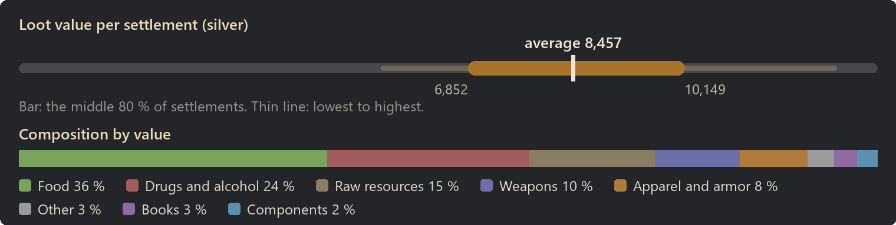
Food: 36 % of the value
| Item | Share of this class | Found in | Average amount |
|---|
| Bread | 15 % | almost always | 50 |
| Dried Meat | 14 % | 98 % | 231 |
| Smoked meat | 10 % | 98 % | 21 |
| Flour | 8 % | 98 % | 159 |
| Wheat | 5 % | 97 % | 151 |
| Onions | 5 % | 75 % | 128 |
| Potatoes | 5 % | almost always | 126 |
| Apples | 5 % | almost always | 126 |
Drugs and alcohol: 24 % of the value
| Item | Share of this class | Found in | Average amount |
|---|
| Wine | 24 % | 64 % | 25 |
| Griffon wine | 24 % | 66 % | 24 |
| Mulberry wine | 24 % | 64 % | 24 |
| Ale | 14 % | 62 % | 24 |
| Cider | 13 % | 62 % | 21 |
Raw resources: 15 % of the value
| Item | Share of this class | Found in | Average amount |
|---|
| Daer leather | 35 % | 34 % | 26 |
| Wood | 14 % | 82 % | 148 |
| Silk | 14 % | 43 % | 33 |
| Raw wood | 10 % | 93 % | 159 |
| Plainleather | 5 % | 38 % | 29 |
| Linen | 4 % | 43 % | 30 |
| Cloth | 3 % | 36 % | 25 |
| Gold ore | 3 % | 16 % | 12 |
Weapons: 10 % of the value
| Item | Share of this class | Found in | Average amount |
|---|
| Greatsword | 14 % | 14 % | 0 |
| Arming sword | 9 % | 20 % | 0 |
| Longsword | 8 % | 12 % | 0 |
| Halberd | 7 % | 16 % | 0 |
| Fencing sword | 5 % | 13 % | 0 |
| Noble sword | 5 % | 11 % | 0 |
| Spetum | 5 % | 18 % | 0 |
| Boar spear | 4 % | 19 % | 0 |
Apparel and armor: 8 % of the value
| Item | Share of this class | Found in | Average amount |
|---|
| Brigandine | 11 % | 28 % | 0 |
| Hauberk | 11 % | 32 % | 0 |
| Full plate | 6 % | 13 % | 0 |
| Heavy hauberk | 6 % | 17 % | 0 |
| Breast plate | 6 % | 16 % | 0 |
| Padded surcoat | 6 % | 29 % | 0 |
| Padded armor | 6 % | 22 % | 0 |
| Chain nasal helm | 6 % | 22 % | 0 |
Other: 3 % of the value
| Item | Share of this class | Found in | Average amount |
|---|
| Dirty silver chalice | 42 % | 32 % | 1 |
| Dirty golden bowl | 21 % | 20 % | 0 |
| Dirty silver bowl | 20 % | 18 % | 0 |
| Dirty golden chalice | 17 % | 10 % | 0 |
| Ruined book | 1 % | 4 % | 0 |
Books: 3 % of the value
| Item | Share of this class | Found in | Average amount |
|---|
| Ancient military maces schematic | 10 % | 4 % | 0 |
| Ancient warbow schematic | 9 % | 4 % | 0 |
| Ancient crossbow schematic | 9 % | 4 % | 0 |
| Ancient greatbow schematic | 8 % | 4 % | 0 |
| Ancient gunpowder schematic | 8 % | 4 % | 0 |
| Ancient metallurgy schematic | 8 % | 3 % | 0 |
| Ancient tar schematic | 7 % | 3 % | 0 |
| Ancient military blades schematic | 6 % | 2 % | 0 |
Components: 2 % of the value
| Item | Share of this class | Found in | Average amount |
|---|
| Basic component | 100 % | 42 % | 13 |
| Most valuable possible find |
Value |
Chance per settlement |
| Greatsword |
371 |
14 % |
| Bardiche |
294 |
5 % |
| Longsword |
255 |
12 % |
| Halberd |
248 |
16 % |
| Noble sword |
232 |
11 % |
Tribal camp
- Tech level: Neolithic
- Expected loot value: 13,957 silver on average, usually 10,233 to 18,771
- Containers: about 63, worth 222 silver each on average
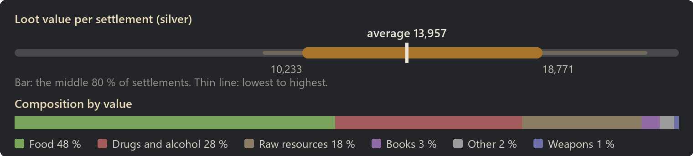
Food: 48 % of the value
| Item | Share of this class | Found in | Average amount |
|---|
| Bread | 14 % | almost always | 107 |
| Dried Meat | 12 % | almost always | 426 |
| Smoked meat | 10 % | almost always | 43 |
| Flour | 8 % | almost always | 356 |
| Apples | 6 % | almost always | 370 |
| Potatoes | 6 % | almost always | 355 |
| Wheat | 5 % | almost always | 332 |
| Carrots | 5 % | 96 % | 311 |
Drugs and alcohol: 28 % of the value
| Item | Share of this class | Found in | Average amount |
|---|
| Mulberry wine | 25 % | 84 % | 47 |
| Wine | 24 % | 84 % | 47 |
| Griffon wine | 23 % | 85 % | 43 |
| Ale | 14 % | 84 % | 47 |
| Cider | 14 % | 86 % | 47 |
Raw resources: 18 % of the value
| Item | Share of this class | Found in | Average amount |
|---|
| Daer leather | 43 % | 65 % | 64 |
| Wood | 13 % | 92 % | 277 |
| Silk | 13 % | 64 % | 64 |
| Raw wood | 12 % | 98 % | 367 |
| Plainleather | 9 % | 86 % | 102 |
| Cloth | 6 % | 82 % | 95 |
| Linen | 4 % | 64 % | 62 |
| Sandstone blocks | 0 % | 7 % | 7 |
Books: 3 % of the value
| Item | Share of this class | Found in | Average amount |
|---|
| Ancient gunpowder schematic | 11 % | 8 % | 0 |
| Ancient warbow schematic | 10 % | 8 % | 0 |
| Advanced cooking recipes | 8 % | 6 % | 0 |
| Ancient noble maces schematic | 8 % | 6 % | 0 |
| Ancient military maces schematic | 7 % | 5 % | 0 |
| Ancient metallurgy schematic | 7 % | 4 % | 0 |
| Ancient military blades schematic | 6 % | 6 % | 0 |
| Ancient tar schematic | 6 % | 4 % | 0 |
Other: 2 % of the value
| Item | Share of this class | Found in | Average amount |
|---|
| Dirty silver chalice | 35 % | 31 % | 1 |
| Dirty golden bowl | 29 % | 30 % | 1 |
| Dirty silver bowl | 25 % | 26 % | 1 |
| Dirty golden chalice | 10 % | 6 % | 0 |
| Ruined book | 1 % | 4 % | 0 |
| Most valuable possible find |
Value |
Chance per settlement |
| Ancient noble polearm schematic |
500 |
3 % |
| Ancient greatbow schematic |
500 |
4 % |
| Ancient metallurgy schematic |
500 |
4 % |
| Ancient warbow schematic |
500 |
8 % |
| Ancient crossbow schematic |
500 |
3 % |
With A Rim of Ice and Fire
| Settlement |
Expected value |
Per container |
| Hamlet |
15,375 |
193 |
| Small fortress |
27,158 |
337 |
| Small market town |
30,998 |
400 |
Hamlet
- Tech level: Medieval
- Expected loot value: 15,375 silver on average, usually 11,641 to 19,424
- Containers: about 80, worth 193 silver each on average
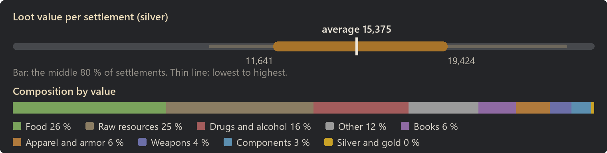
Food: 26 % of the value
| Item | Share of this class | Found in | Average amount |
|---|
| Bread | 12 % | almost always | 56 |
| Flour | 12 % | almost always | 329 |
| Wheat | 8 % | almost always | 308 |
| Straw | 6 % | almost always | 356 |
| Apples | 6 % | almost always | 215 |
| Potatoes | 6 % | almost always | 209 |
| Cabbages | 5 % | 90 % | 194 |
| Onions | 5 % | 90 % | 194 |
Raw resources: 25 % of the value
| Item | Share of this class | Found in | Average amount |
|---|
| Daer leather | 35 % | 72 % | 80 |
| Raw wood | 18 % | almost always | 869 |
| Wood | 13 % | 99 % | 422 |
| Silk | 10 % | 73 % | 79 |
| Plainleather | 5 % | 73 % | 85 |
| Cloth | 3 % | 74 % | 86 |
| Linen | 3 % | 74 % | 80 |
| Gold ore | 3 % | 43 % | 42 |
Drugs and alcohol: 16 % of the value
| Item | Share of this class | Found in | Average amount |
|---|
| Wine | 28 % | 72 % | 34 |
| Mulberry wine | 17 % | 56 % | 21 |
| Griffon wine | 16 % | 58 % | 20 |
| Ale | 14 % | 74 % | 29 |
| Cider | 13 % | 66 % | 26 |
| Stardust | 4 % | 10 % | 0 |
| Roxberry stout | 4 % | 12 % | 4 |
| Luhix | 2 % | 4 % | 0 |
Other: 12 % of the value
| Item | Share of this class | Found in | Average amount |
|---|
| Dirty silver chalice | 17 % | 62 % | 2 |
| Dirty golden chalice | 11 % | 40 % | 1 |
| Dirty silver bowl | 9 % | 44 % | 1 |
| Dirty golden bowl | 8 % | 38 % | 1 |
| Rox Horn | 7 % | 15 % | 1 |
| Ruby dice | 5 % | 8 % | 0 |
| Ancient wood | 4 % | 6 % | 0 |
| Emerald dice | 4 % | 8 % | 0 |
Books: 6 % of the value
| Item | Share of this class | Found in | Average amount |
|---|
| Ancient warbow schematic | 9 % | 14 % | 0 |
| Ancient noble polearm schematic | 9 % | 14 % | 0 |
| Ancient military maces schematic | 8 % | 13 % | 0 |
| Ancient crossbow schematic | 7 % | 13 % | 0 |
| Ancient ballista repeater schematics | 7 % | 12 % | 0 |
| Ancient noble maces schematic | 6 % | 12 % | 0 |
| Ancient tar schematic | 6 % | 12 % | 0 |
| Intermediate cooking recipes | 6 % | 11 % | 0 |
Apparel and armor: 6 % of the value
| Item | Share of this class | Found in | Average amount |
|---|
| Ring of haste | 17 % | 8 % | 0 |
| Ring of tending | 15 % | 6 % | 0 |
| Ring of holding | 12 % | 6 % | 0 |
| Hauberk | 6 % | 24 % | 0 |
| Brigandine | 4 % | 14 % | 0 |
| Breast plate | 4 % | 12 % | 0 |
| Padded armor | 4 % | 19 % | 0 |
| Heavy hauberk | 4 % | 13 % | 0 |
Weapons: 4 % of the value
| Item | Share of this class | Found in | Average amount |
|---|
| Named two-handed hammer | 18 % | 2 % | 0 |
| Greatsword | 8 % | 6 % | 0 |
| War bow | 7 % | 31 % | 1 |
| Halberd | 6 % | 12 % | 0 |
| Greatbow | 6 % | 29 % | 0 |
| Noble sword | 4 % | 6 % | 0 |
| Hunting bow | 4 % | 28 % | 0 |
| Fencing sword | 4 % | 10 % | 0 |
Components: 3 % of the value
| Item | Share of this class | Found in | Average amount |
|---|
| Basic component | 98 % | 78 % | 34 |
| Scorpio bolts | 1 % | almost always | 2 |
| Ballista bolts | 0 % | 25 % | 0 |
| Most valuable possible find |
Value |
Chance per settlement |
| Named two-handed hammer |
6,567 |
2 % |
| Treatise (plants) |
1,200 |
1 % |
| Treatise (medicine) |
1,200 |
2 % |
| Treatise (intellectual) |
1,200 |
2 % |
| Treatise (animals) |
1,200 |
2 % |
Small fortress
- Tech level: Medieval
- Expected loot value: 27,158 silver on average, usually 20,014 to 38,057
- Containers: about 81, worth 337 silver each on average
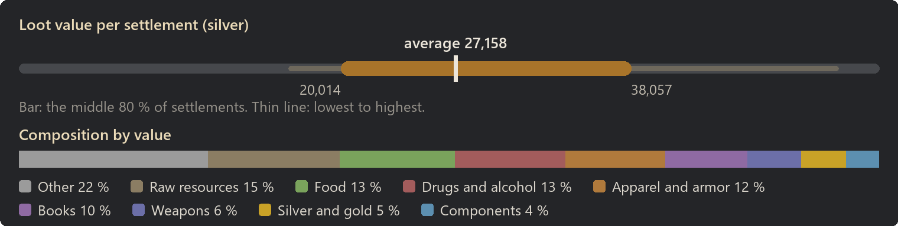
Other: 22 % of the value
| Item | Share of this class | Found in | Average amount |
|---|
| Dirty silver chalice | 28 % | almost always | 11 |
| Dirty golden chalice | 15 % | 88 % | 6 |
| Dirty silver bowl | 13 % | 94 % | 5 |
| Dirty golden bowl | 12 % | 91 % | 5 |
| Ruby dice | 5 % | 23 % | 1 |
| Sapphire dice | 5 % | 24 % | 1 |
| Rox Horn | 4 % | 27 % | 2 |
| Emerald dice | 3 % | 22 % | 1 |
Raw resources: 15 % of the value
| Item | Share of this class | Found in | Average amount |
|---|
| Daer leather | 33 % | 72 % | 80 |
| Wood | 10 % | 96 % | 330 |
| Silk | 9 % | 70 % | 73 |
| Raw wood | 8 % | 99 % | 413 |
| Gold ore | 6 % | 68 % | 85 |
| Iron ingot | 6 % | 94 % | 169 |
| Plainleather | 4 % | 66 % | 72 |
| Linen | 3 % | 77 % | 83 |
Food: 13 % of the value
| Item | Share of this class | Found in | Average amount |
|---|
| Flour | 13 % | almost always | 318 |
| Bread | 12 % | almost always | 47 |
| Wheat | 9 % | almost always | 307 |
| Dried Meat | 9 % | 98 % | 165 |
| Smoked meat | 6 % | 88 % | 15 |
| Pumpkins | 5 % | 78 % | 151 |
| Cabbages | 4 % | 79 % | 147 |
| Garlic | 4 % | 78 % | 145 |
Drugs and alcohol: 13 % of the value
| Item | Share of this class | Found in | Average amount |
|---|
| Wine | 27 % | 82 % | 48 |
| Mulberry wine | 20 % | 76 % | 36 |
| Griffon wine | 20 % | 77 % | 35 |
| Ale | 14 % | 78 % | 39 |
| Cider | 13 % | 78 % | 38 |
| Roxberry stout | 6 % | 25 % | 8 |
Apparel and armor: 12 % of the value
| Item | Share of this class | Found in | Average amount |
|---|
| Ring of tending | 21 % | 25 % | 1 |
| Ring of haste | 13 % | 24 % | 1 |
| Ring of holding | 12 % | 24 % | 1 |
| Brigandine | 5 % | 44 % | 1 |
| Hauberk | 5 % | 50 % | 1 |
| Heavy hauberk | 5 % | 42 % | 1 |
| Breast plate | 4 % | 32 % | 0 |
| Chain nasal helm | 4 % | 52 % | 1 |
Books: 10 % of the value
| Item | Share of this class | Found in | Average amount |
|---|
| Ancient noble maces schematic | 7 % | 34 % | 0 |
| Ancient metallurgy schematic | 7 % | 29 % | 0 |
| Advanced cooking recipes | 7 % | 28 % | 0 |
| Ancient tar schematic | 7 % | 31 % | 0 |
| Ancient greatbow schematic | 7 % | 28 % | 0 |
| Intermediate cooking recipes | 7 % | 30 % | 0 |
| Ancient crossbow schematic | 6 % | 26 % | 0 |
| Ancient crossbow schematic | 6 % | 28 % | 0 |
Weapons: 6 % of the value
| Item | Share of this class | Found in | Average amount |
|---|
| War bow | 8 % | 72 % | 2 |
| Halberd | 6 % | 42 % | 1 |
| Greatbow | 6 % | 66 % | 2 |
| Spetum | 5 % | 40 % | 1 |
| Hunting bow | 5 % | 70 % | 2 |
| Greatsword | 5 % | 20 % | 0 |
| Billhook | 4 % | 38 % | 0 |
| Arming sword | 4 % | 32 % | 0 |
Silver and gold: 5 % of the value
| Item | Share of this class | Found in | Average amount |
|---|
| Gold | 100 % | 92 % | 141 |
Components: 4 % of the value
| Item | Share of this class | Found in | Average amount |
|---|
| Basic component | 99 % | 91 % | 68 |
| Ballista bolts | 1 % | almost always | 3 |
| Most valuable possible find |
Value |
Chance per settlement |
| Named greatsword |
6,810 |
under 1 % |
| Named two-handed hammer |
6,567 |
under 1 % |
| Named greataxe |
6,532 |
under 1 % |
| Named halberd |
6,037 |
under 1 % |
| Treatise (melee) |
1,200 |
1 % |
Small market town
- Tech level: Medieval
- Expected loot value: 30,998 silver on average, usually 22,340 to 39,095
- Containers: about 78, worth 400 silver each on average
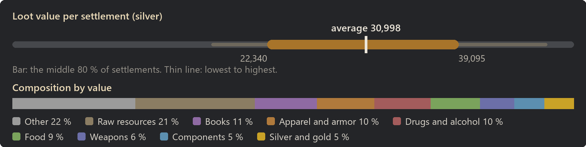
Other: 22 % of the value
| Item | Share of this class | Found in | Average amount |
|---|
| Dirty silver chalice | 31 % | almost always | 14 |
| Dirty golden chalice | 16 % | 91 % | 7 |
| Dirty silver bowl | 14 % | 97 % | 7 |
| Dirty golden bowl | 11 % | 92 % | 5 |
| Sapphire dice | 6 % | 31 % | 1 |
| Ruby dice | 6 % | 32 % | 1 |
| Emerald dice | 3 % | 25 % | 1 |
| Dirty emerald skull | 2 % | 36 % | 1 |
Raw resources: 21 % of the value
| Item | Share of this class | Found in | Average amount |
|---|
| Daer leather | 32 % | 86 % | 124 |
| Wood | 9 % | almost always | 517 |
| Silk | 9 % | 85 % | 122 |
| Raw wood | 7 % | almost always | 601 |
| Plainleather | 7 % | 99 % | 214 |
| Gold ore | 6 % | 78 % | 136 |
| Iron ingot | 5 % | 98 % | 225 |
| Linen | 3 % | 83 % | 117 |
Books: 11 % of the value
| Item | Share of this class | Found in | Average amount |
|---|
| Ancient metallurgy schematic | 8 % | 42 % | 1 |
| Ancient military maces schematic | 7 % | 43 % | 1 |
| Ancient crossbow schematic | 7 % | 38 % | 0 |
| Ancient miltary polearm schematic | 7 % | 38 % | 0 |
| Ancient crossbow schematic | 7 % | 38 % | 0 |
| Ancient noble blades schematic | 7 % | 37 % | 0 |
| Ancient tar schematic | 6 % | 38 % | 0 |
| Intermediate cooking recipes | 6 % | 37 % | 0 |
Apparel and armor: 10 % of the value
| Item | Share of this class | Found in | Average amount |
|---|
| Ring of tending | 22 % | 26 % | 1 |
| Ring of haste | 18 % | 30 % | 1 |
| Ring of holding | 17 % | 30 % | 1 |
| Hauberk | 5 % | 54 % | 1 |
| Brigandine | 4 % | 38 % | 0 |
| Heavy hauberk | 3 % | 34 % | 0 |
| Padded surcoat | 3 % | 52 % | 1 |
| Breast plate | 3 % | 30 % | 0 |
Drugs and alcohol: 10 % of the value
| Item | Share of this class | Found in | Average amount |
|---|
| Wine | 32 % | 89 % | 50 |
| Mulberry wine | 22 % | 76 % | 33 |
| Griffon wine | 19 % | 70 % | 30 |
| Cider | 14 % | 74 % | 36 |
| Ale | 13 % | 73 % | 34 |
Food: 9 % of the value
| Item | Share of this class | Found in | Average amount |
|---|
| Bread | 21 % | almost always | 63 |
| Flour | 14 % | almost always | 246 |
| Dried Meat | 11 % | 97 % | 156 |
| Wheat | 9 % | 98 % | 234 |
| Smoked meat | 9 % | 88 % | 16 |
| Packaged macci | 4 % | 88 % | 5 |
| Packaged rations | 4 % | 82 % | 4 |
| Cabbages | 3 % | 52 % | 65 |
Weapons: 6 % of the value
| Item | Share of this class | Found in | Average amount |
|---|
| War bow | 7 % | 66 % | 2 |
| Greatbow | 6 % | 66 % | 2 |
| Named greatsword | 5 % | 2 % | 0 |
| Hunting bow | 5 % | 66 % | 2 |
| Named greataxe | 5 % | 2 % | 0 |
| Halberd | 5 % | 35 % | 0 |
| Pike | 4 % | 46 % | 1 |
| Greatsword | 4 % | 18 % | 0 |
Components: 5 % of the value
| Item | Share of this class | Found in | Average amount |
|---|
| Basic component | 99 % | almost always | 110 |
| Stone boulder | 0 % | 25 % | 0 |
| Tarred stone boulder | 0 % | 25 % | 0 |
Silver and gold: 5 % of the value
| Item | Share of this class | Found in | Average amount |
|---|
| Gold | 100 % | 96 % | 161 |
| Most valuable possible find |
Value |
Chance per settlement |
| Named greatsword |
6,810 |
2 % |
| Named two-handed hammer |
6,567 |
under 1 % |
| Named greataxe |
6,532 |
2 % |
| Named two-handed flanged mace |
6,067 |
1 % |
| Named halberd |
6,037 |
1 % |
With World Domination
Without World Domination loot mixed in. With the slider Loot in World Domination settlements below 100 %, general containers get World Domination's loot budget instead, see Compatibility.
| Settlement |
Expected value |
Per container |
| Slave village |
3,047 |
101 |
| Logging camp |
3,072 |
95 |
| War camp |
3,287 |
162 |
| Farm camp |
4,160 |
114 |
| Mining camp |
4,722 |
112 |
| Production village |
16,934 |
222 |
Slave village
- Tech level: Medieval
- Expected loot value: 3,047 silver on average, usually 2,080 to 4,500
- Containers: about 30, worth 101 silver each on average
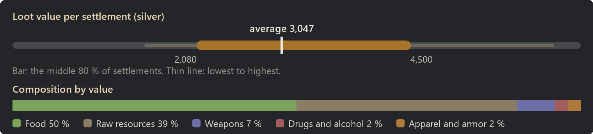
Food: 50 % of the value
| Item | Share of this class | Found in | Average amount |
|---|
| Bread | 13 % | 98 % | 23 |
| Flour | 9 % | 88 % | 90 |
| Straw | 9 % | 97 % | 191 |
| Potatoes | 9 % | 98 % | 119 |
| Apples | 8 % | 98 % | 114 |
| Pumpkins | 7 % | 66 % | 102 |
| Wheat | 7 % | 95 % | 101 |
| Cabbages | 7 % | 64 % | 96 |
Raw resources: 39 % of the value
| Item | Share of this class | Found in | Average amount |
|---|
| Daer leather | 35 % | 32 % | 24 |
| Raw wood | 26 % | almost always | 392 |
| Wood | 16 % | 80 % | 157 |
| Silk | 11 % | 38 % | 26 |
| Plainleather | 4 % | 36 % | 25 |
| Linen | 3 % | 36 % | 25 |
| Cloth | 2 % | 27 % | 20 |
| Granite blocks | 0 % | 4 % | 4 |
Weapons: 7 % of the value
| Item | Share of this class | Found in | Average amount |
|---|
| Halberd | 9 % | 8 % | 0 |
| Greatbow | 8 % | 14 % | 0 |
| Spetum | 6 % | 6 % | 0 |
| Greatsword | 6 % | 4 % | 0 |
| Hunting bow | 6 % | 13 % | 0 |
| Hooked blade | 5 % | 10 % | 0 |
| War bow | 5 % | 10 % | 0 |
| Billhook | 5 % | 6 % | 0 |
Drugs and alcohol: 2 % of the value
| Item | Share of this class | Found in | Average amount |
|---|
| Wine | 33 % | 4 % | 1 |
| Griffon wine | 31 % | 4 % | 1 |
| Cider | 23 % | 4 % | 1 |
| Mulberry wine | 9 % | 2 % | 0 |
| Ale | 5 % | 2 % | 0 |
Apparel and armor: 2 % of the value
| Item | Share of this class | Found in | Average amount |
|---|
| Heavy hauberk | 15 % | 4 % | 0 |
| Hauberk | 12 % | 4 % | 0 |
| Brigandine | 9 % | 2 % | 0 |
| Padded surcoat | 7 % | 4 % | 0 |
| Breast plate | 6 % | 2 % | 0 |
| Padded kettle | 6 % | 4 % | 0 |
| Chain nasal helm | 6 % | 3 % | 0 |
| Great helm | 5 % | 2 % | 0 |
| Most valuable possible find |
Value |
Chance per settlement |
| Greatsword |
371 |
4 % |
| Brigandine |
305 |
2 % |
| Longsword |
255 |
2 % |
| Halberd |
248 |
8 % |
| Spetum |
193 |
6 % |
Logging camp
- Tech level: Medieval
- Expected loot value: 3,072 silver on average, usually 2,141 to 4,215
- Containers: about 32, worth 95 silver each on average
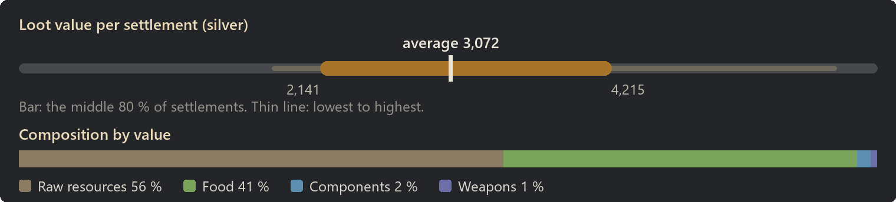
Raw resources: 56 % of the value
| Item | Share of this class | Found in | Average amount |
|---|
| Raw wood | 32 % | almost always | 700 |
| Daer leather | 26 % | 37 % | 26 |
| Wood | 15 % | 90 % | 222 |
| Silk | 11 % | 46 % | 37 |
| Plainleather | 5 % | 54 % | 41 |
| Linen | 3 % | 47 % | 35 |
| Cloth | 3 % | 43 % | 33 |
| Silver ore | 1 % | 21 % | 15 |
Food: 41 % of the value
| Item | Share of this class | Found in | Average amount |
|---|
| Bread | 19 % | almost always | 26 |
| Straw | 10 % | 99 % | 191 |
| Potatoes | 9 % | 96 % | 103 |
| Flour | 9 % | 86 % | 74 |
| Apples | 8 % | 91 % | 97 |
| Pumpkins | 7 % | 60 % | 80 |
| Lentils | 7 % | 55 % | 78 |
| Onions | 6 % | 52 % | 75 |
Components: 2 % of the value
| Item | Share of this class | Found in | Average amount |
|---|
| Basic component | 100 % | 14 % | 3 |
| Most valuable possible find |
Value |
Chance per settlement |
| Arming sword |
166 |
5 % |
| Woodcutter's axe |
156 |
5 % |
| Hooked blade |
128 |
6 % |
| Pickaxe |
96 |
6 % |
| Daer leather |
17 |
37 % |
War camp
- Tech level: Medieval
- Expected loot value: 3,287 silver on average, usually 2,174 to 4,516
- Containers: about 20, worth 162 silver each on average
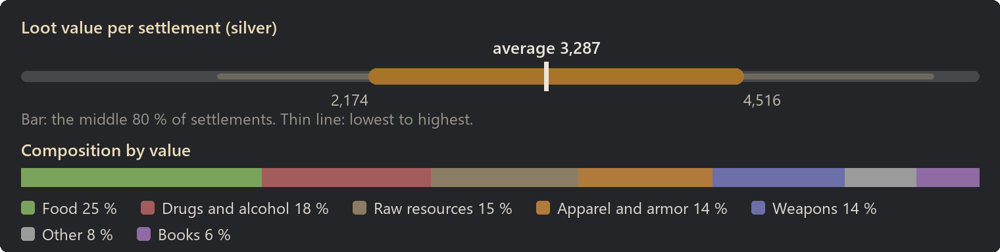
Food: 25 % of the value
| Item | Share of this class | Found in | Average amount |
|---|
| Bread | 18 % | 98 % | 16 |
| Dried Meat | 14 % | 66 % | 60 |
| Smoked meat | 10 % | 60 % | 6 |
| Lentils | 6 % | 36 % | 43 |
| Onions | 6 % | 36 % | 43 |
| Cabbages | 6 % | 34 % | 42 |
| Straw | 5 % | 77 % | 64 |
| Carrots | 5 % | 33 % | 39 |
Drugs and alcohol: 18 % of the value
| Item | Share of this class | Found in | Average amount |
|---|
| Wine | 28 % | 30 % | 8 |
| Griffon wine | 26 % | 26 % | 7 |
| Mulberry wine | 18 % | 19 % | 5 |
| Ale | 16 % | 28 % | 8 |
| Cider | 12 % | 23 % | 6 |
Raw resources: 15 % of the value
| Item | Share of this class | Found in | Average amount |
|---|
| Daer leather | 46 % | 24 % | 14 |
| Wood | 13 % | 42 % | 54 |
| Silk | 13 % | 20 % | 13 |
| Raw wood | 9 % | 46 % | 59 |
| Plainleather | 7 % | 22 % | 17 |
| Linen | 6 % | 31 % | 21 |
| Cloth | 4 % | 22 % | 15 |
| Emerald | 1 % | 11 % | 0 |
Apparel and armor: 14 % of the value
| Item | Share of this class | Found in | Average amount |
|---|
| Hauberk | 10 % | 21 % | 0 |
| Brigandine | 10 % | 18 % | 0 |
| Heavy hauberk | 8 % | 15 % | 0 |
| Padded armor | 8 % | 20 % | 0 |
| Padded surcoat | 7 % | 26 % | 0 |
| Breast plate | 6 % | 12 % | 0 |
| Chain nasal helm | 6 % | 19 % | 0 |
| Chain kettle helm | 5 % | 16 % | 0 |
Weapons: 14 % of the value
| Item | Share of this class | Found in | Average amount |
|---|
| Longsword | 18 % | 12 % | 0 |
| Greatsword | 14 % | 7 % | 0 |
| Noble sword | 8 % | 8 % | 0 |
| Halberd | 8 % | 5 % | 0 |
| Arming sword | 7 % | 10 % | 0 |
| Falchion | 5 % | 6 % | 0 |
| Boar spear | 5 % | 10 % | 0 |
| Spetum | 5 % | 6 % | 0 |
Other: 8 % of the value
| Item | Share of this class | Found in | Average amount |
|---|
| Dirty silver chalice | 40 % | 24 % | 1 |
| Dirty golden bowl | 28 % | 24 % | 0 |
| Dirty silver bowl | 22 % | 18 % | 0 |
| Dirty golden chalice | 10 % | 5 % | 0 |
| Ruined book | 0 % | 2 % | 0 |
Books: 6 % of the value
| Item | Share of this class | Found in | Average amount |
|---|
| Ancient crossbow schematic | 10 % | 4 % | 0 |
| Ancient military blades schematic | 9 % | 4 % | 0 |
| Ancient greatbow schematic | 8 % | 4 % | 0 |
| Ancient warbow schematic | 8 % | 4 % | 0 |
| Ancient tar schematic | 7 % | 3 % | 0 |
| Ancient noble maces schematic | 7 % | 4 % | 0 |
| Ancient crossbow schematic | 7 % | 3 % | 0 |
| Advanced cooking recipes | 7 % | 2 % | 0 |
| Most valuable possible find |
Value |
Chance per settlement |
| Greatsword |
371 |
7 % |
| Greataxe |
311 |
1 % |
| Longaxe |
287 |
2 % |
| Longsword |
255 |
12 % |
| Halberd |
248 |
5 % |
Farm camp
- Tech level: Medieval
- Expected loot value: 4,160 silver on average, usually 2,994 to 5,263
- Containers: about 36, worth 114 silver each on average
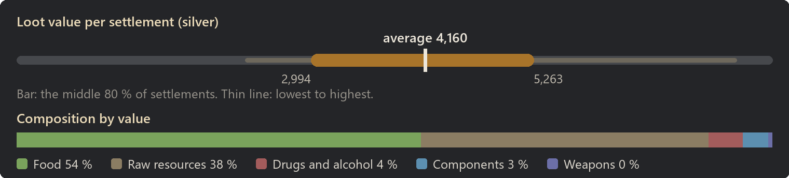
Food: 54 % of the value
| Item | Share of this class | Found in | Average amount |
|---|
| Flour | 12 % | 99 % | 180 |
| Bread | 10 % | almost always | 26 |
| Wheat | 9 % | almost always | 189 |
| Apples | 9 % | almost always | 181 |
| Potatoes | 9 % | 99 % | 174 |
| Garlic | 7 % | 76 % | 135 |
| Straw | 6 % | almost always | 208 |
| Pumpkins | 6 % | 79 % | 131 |
Raw resources: 38 % of the value
| Item | Share of this class | Found in | Average amount |
|---|
| Daer leather | 35 % | 44 % | 32 |
| Raw wood | 22 % | almost always | 425 |
| Wood | 15 % | 92 % | 202 |
| Silk | 8 % | 36 % | 24 |
| Plainleather | 4 % | 41 % | 32 |
| Gold ore | 4 % | 24 % | 19 |
| Linen | 3 % | 42 % | 32 |
| Cloth | 2 % | 33 % | 26 |
Drugs and alcohol: 4 % of the value
| Item | Share of this class | Found in | Average amount |
|---|
| Griffon wine | 36 % | 13 % | 4 |
| Wine | 22 % | 8 % | 2 |
| Ale | 21 % | 13 % | 3 |
| Mulberry wine | 13 % | 6 % | 1 |
| Cider | 8 % | 7 % | 1 |
Components: 3 % of the value
| Item | Share of this class | Found in | Average amount |
|---|
| Basic component | 100 % | 40 % | 10 |
| Most valuable possible find |
Value |
Chance per settlement |
| Woodcutter's axe |
156 |
4 % |
| Griffon wine |
20 |
13 % |
| Wine |
20 |
8 % |
| Mulberry wine |
20 |
6 % |
| Daer leather |
17 |
44 % |
Mining camp
- Tech level: Medieval
- Expected loot value: 4,722 silver on average, usually 3,350 to 6,162
- Containers: about 42, worth 112 silver each on average
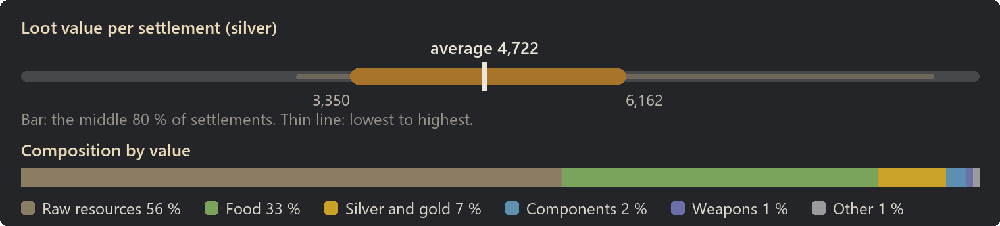
Raw resources: 56 % of the value
| Item | Share of this class | Found in | Average amount |
|---|
| Daer leather | 28 % | 48 % | 44 |
| Raw wood | 14 % | almost always | 460 |
| Wood | 12 % | 93 % | 257 |
| Silk | 9 % | 54 % | 48 |
| Gold ore | 8 % | 56 % | 73 |
| Coal chunks | 6 % | 98 % | 150 |
| Silver ore | 6 % | 92 % | 154 |
| Iron ore | 4 % | almost always | 296 |
Food: 33 % of the value
| Item | Share of this class | Found in | Average amount |
|---|
| Bread | 21 % | almost always | 37 |
| Straw | 10 % | almost always | 229 |
| Potatoes | 8 % | 98 % | 114 |
| Apples | 8 % | 98 % | 107 |
| Carrots | 7 % | 67 % | 97 |
| Pumpkins | 7 % | 62 % | 94 |
| Onions | 6 % | 64 % | 90 |
| Flour | 6 % | 88 % | 65 |
Silver and gold: 7 % of the value
| Item | Share of this class | Found in | Average amount |
|---|
| Gold | 100 % | 39 % | 34 |
Components: 2 % of the value
| Item | Share of this class | Found in | Average amount |
|---|
| Basic component | 100 % | 26 % | 7 |
| Most valuable possible find |
Value |
Chance per settlement |
| Arming sword |
166 |
7 % |
| Woodcutter's axe |
156 |
10 % |
| Hooked blade |
128 |
8 % |
| Daer leather |
17 |
48 % |
| Basic component |
15 |
26 % |
Production village
- Tech level: Medieval
- Expected loot value: 16,934 silver on average, usually 12,843 to 20,628
- Containers: about 76, worth 222 silver each on average
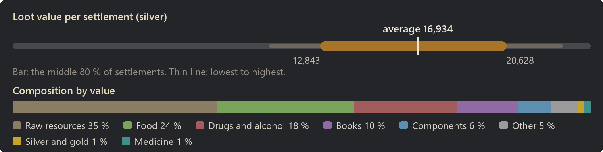
Raw resources: 35 % of the value
| Item | Share of this class | Found in | Average amount |
|---|
| Daer leather | 36 % | 88 % | 127 |
| Raw wood | 12 % | almost always | 934 |
| Plainleather | 10 % | 98 % | 270 |
| Silk | 9 % | 84 % | 110 |
| Wood | 9 % | 97 % | 438 |
| Cloth | 4 % | 97 % | 169 |
| Gold ore | 4 % | 57 % | 78 |
| Linen | 3 % | 82 % | 107 |
Food: 24 % of the value
| Item | Share of this class | Found in | Average amount |
|---|
| Bread | 15 % | almost always | 66 |
| Flour | 13 % | almost always | 340 |
| Wheat | 10 % | almost always | 347 |
| Dried Meat | 8 % | 98 % | 174 |
| Smoked meat | 6 % | 90 % | 17 |
| Potatoes | 6 % | almost always | 223 |
| Apples | 6 % | almost always | 206 |
| Lentils | 4 % | 80 % | 153 |
Drugs and alcohol: 18 % of the value
| Item | Share of this class | Found in | Average amount |
|---|
| Wine | 16 % | 62 % | 24 |
| Griffon wine | 14 % | 55 % | 21 |
| Mulberry wine | 13 % | 53 % | 19 |
| Luhix | 12 % | 30 % | 1 |
| Stardust | 9 % | 26 % | 1 |
| Ale | 8 % | 57 % | 21 |
| Paregoric | 8 % | 30 % | 1 |
| Cider | 7 % | 54 % | 18 |
Books: 10 % of the value
| Item | Share of this class | Found in | Average amount |
|---|
| Ancient metallurgy schematic | 7 % | 22 % | 0 |
| Intermediate cooking recipes | 7 % | 21 % | 0 |
| Ancient gunpowder schematic | 7 % | 19 % | 0 |
| Ancient greatbow schematic | 7 % | 22 % | 0 |
| Ancient crossbow schematic | 7 % | 22 % | 0 |
| Ancient noble blades schematic | 7 % | 22 % | 0 |
| Ancient miltary polearm schematic | 7 % | 20 % | 0 |
| Ancient warbow schematic | 6 % | 18 % | 0 |
Components: 6 % of the value
| Item | Share of this class | Found in | Average amount |
|---|
| Basic component | 100 % | 93 % | 64 |
Other: 5 % of the value
| Item | Share of this class | Found in | Average amount |
|---|
| Treatise (plants) | 14 % | 4 % | 0 |
| Treatise (mining) | 9 % | 4 % | 0 |
| Treatise (shooting) | 7 % | 2 % | 0 |
| Treatise (construction) | 7 % | 3 % | 0 |
| Dirty silver chalice | 6 % | 18 % | 0 |
| Treatise (artistic) | 6 % | 2 % | 0 |
| Treatise (intellectual) | 6 % | 2 % | 0 |
| Ruined book | 6 % | 46 % | 1 |
Silver and gold: 1 % of the value
| Item | Share of this class | Found in | Average amount |
|---|
| Gold | 100 % | 25 % | 18 |
Medicine: 1 % of the value
| Item | Share of this class | Found in | Average amount |
|---|
| Mindwort | 23 % | 58 % | 4 |
| Fleawort | 22 % | 59 % | 4 |
| Herbal medicine | 19 % | 54 % | 3 |
| Poppy | 17 % | 51 % | 3 |
| Fly agaric | 16 % | 48 % | 3 |
| Herbal extract | 3 % | 48 % | 3 |
| Most valuable possible find |
Value |
Chance per settlement |
| Treatise (medicine) |
1,200 |
2 % |
| Treatise (shooting) |
1,200 |
2 % |
| Treatise (mining) |
1,200 |
4 % |
| Treatise (crafting) |
1,200 |
2 % |
| Treatise (plants) |
1,200 |
4 % |
Simulated on 2026-10-08.